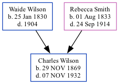

Charles Francis Wilson 1869 - 1932
[ Home ] | [ Surnames Index ] | [ Family History ]The child of Waide Wilson and Rebecca Smith, was born in Joplin, Jasper, Missouri, USA on Nov 29, 18691,2.
During his life, he was living in Galena, Jasper, Missouri, USA in 18801; and in Joplin Ward 5, Jasper, Missouri in 19002.
He died on Nov 7, 1932 in Colorado, USA.
Parents
- Waide Hampton was born on Jan 25, 1830
- Rebecca Jane was born on Aug 1, 1833
Citations
- 1880 United States Federal Census Ancestry.com Operations Inc (Age: 10; Marital Status: Single; Relation to Head of House: Son)
- 1900 United States Federal Census Ancestry.com Operations Inc (Age: 30; Marital Status: Single; Relation to Head of House: Son)
Family Tree
Data (GEDCOM) maintained by Jay Weston Hannah, Omaha, Nebraska, USA.
Website generated by ged2site. Last updated on Jun 18, 2024.